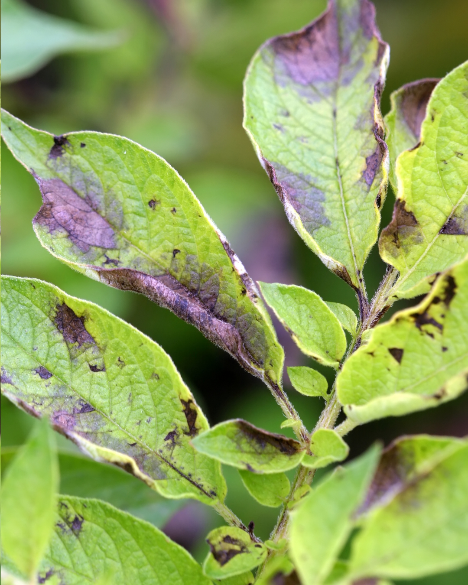
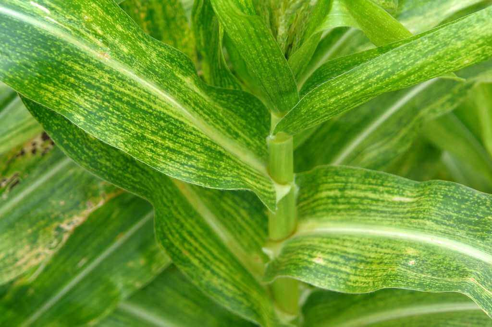
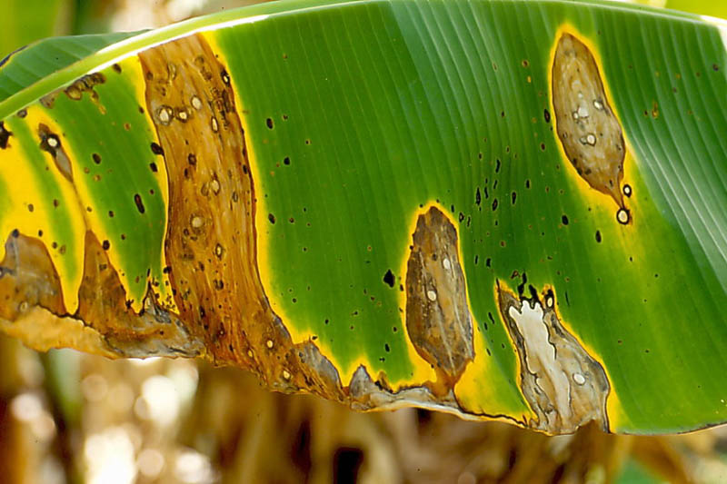
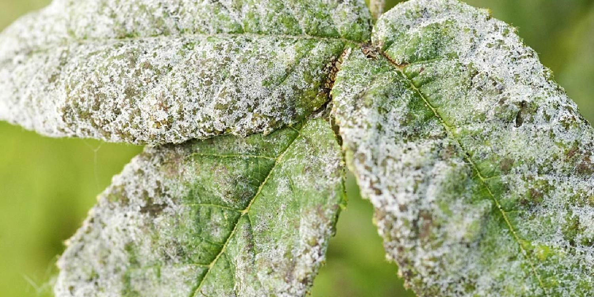

Know Your Enemy


Common Crop Diseases
Understanding these diseases helps you act fast. Our AI can detect these and many more.

Late Blight
Affects potatoes and tomatoes. Causes dark lesions on leaves and stems, rapidly destroying crops.
Fungal
Maize Streak Virus
Causes yellow streaks on maize leaves, stunting growth and severely reducing yield.

Bacterial Leaf Blight
Water-soaked lesions that turn yellow then brown, common in rice and other cereals.
Bacterial
Powdery Mildew
White powdery coating on leaves and stems, weakening the plant and reducing photosynthesis.
Fungal
Wheat Rust
Orange-red pustules on wheat leaves and stems, one of the most destructive cereal diseases.
Fungal
Cassava Mosaic
Mosaic patterns and leaf distortion in cassava, spread by whiteflies across sub-Saharan Africa.